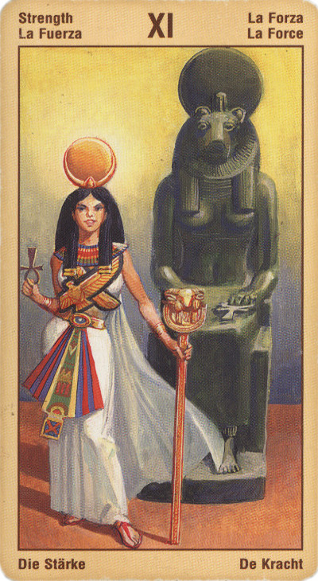

Справедливость
Карта Справедливость описывает могущество истинного понимания, которое приводит к правильному выбору и к адекватным действиям в реальном мире. Она также представляет собой исключительный момент настоящего, которое идеально сбалансировано между прошлым и будущим.
Смысл карты: будь честен с самим собой: ведь ты уже знаешь, что за все придется отвечать. Ты сам стремился узнать истину – что делать, если она лишила тебя последних иллюзий? Это больно, конечно, но не стоит отчаиваться. Лучше взять себя в руки и принять мир таким, каков он есть. А вот о самом себе стоит задуматься глубже: следует ли продолжать ту жизнь, которую ты вел до сих пор? Но рассчитайся прежде со старыми долгами...
Значение: И в раскладе она означает (прямая), что космическое равновесие будет восстановлено, причем в самом скором времени. Кто бы ни совершил дурной поступок, ему придется расплатиться за это, а пострадавший будет вознагражден. Если пострадал спрашивающий, значит, карта дает ему благоприятный прогноз; если же он сам нарушил равновесие, он будет наказан.
В самом обыденном плане она может означать судебное дело и выигрыш его для спрашивающего. Если спрашивают о том, стоит ли вчинять иск, прямая карта Справедливости говорит, что стоит: вы выиграете.
Не исключено, что вас призывают к ответу за совершенные действия и поступки, что вам необходимо пройти через судебную тяжбу. Также может быть, что вы вовлечены в процесс принятия решений, который подразумевает взвешивание разных аргументов и умение разбираться в ситуации.
Карта утверждает, что справедливость будет обязательно восстановлена. Если мы поступаем честно и порядочно, то нас вознаграждают, если же
пользуемся сомнительными средствами, то рано или поздно получаем по заслугам. Таким образом, эта карта предполагает высокую меру ответственности человека за свои поступки. Она недвусмысленно показывает, что ничто не дается даром, но ни в чем и не будет препятствий, если мы готовы отвечать за все, что получаем.
Восьмая карта учит, что только сбалансированные силы могут продолжать существовать, и что вечная справедливость уничтожит мечом то, что не сбалансировано.
Человек говорит "нет" своим прежним представлениям о жесткости и неумолимости природных законов мира, для того чтобы найти в себе силы, привнести в мир новое естественным путем. Благородство цельной личности, уравновешивающее собственный разумный эгоизм и милосердие к другим, дает возможность направить свою волю на всеобщее благо. Венера и Сатурн в их равновесном сочетании - таково содержание современного восьмого аркана таро. Этому аркану свойственны объективность, тяготение к порядку, стремление установить связь между идеальным и земным (осуществимым).
Что касается реальных событий, то вас ждут бумаги, правовая деятельность, которая вас каким-либо образом коснется (то ли выплатят компенсацию, а может быть, оформят развод). Возможно, дела спорные - развод, а иногда и о возмещении какого-либо убытка. В зависимости от соседних карт может предполагать брак или легализацию существующей связи.
В психологической сфере - эта карта является символом равновесия духа и умением найти общий язык с другими людьми - особенно в важных делах, означает зрелость и жизненный опыт.
Беспристрастность. Справедливость, уравновешенность, разумный компромисс. Иногда предвешает судебное дело. Победу в суде правой стороны. Советует также проверять документы и сделки - законны ли они.
Данный знак как бы пропускает все поступки и мысли людей через призму справедливости.
Ситуацию данный Аркан также может характеризовать двояко: либо вы действуете, исходя из идеи справедливости, - и тогда помощь свыше вам обеспечена. Либо же вы пытаетесь «перехитрить» собственную судьбу, замахиваясь на то, что вам принадлежать не может. В этом случае нелишним было бы помнить, что помимо весов в руках у богини находится меч!
В перевернутом положении она означает нарушение космического равновесия. Это может быть констатация факта (спрашивающий совершил дурной поступок) или предостережение. В обыденном плане – заведомый проигрыш судебного дела, обвинительный приговор.
В перевернутом положении карта - это разрыв, но не узаконенный, а также судебные дела, долго неразрешимые. Вам станут преподавать принятие необходимости.